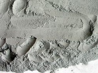
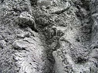
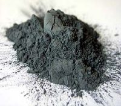
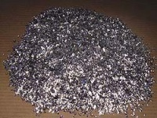

Aluminium (Powder)
From PyroGuide

Formula: Al
Synonyms: Aluminium metal
Description: Aluminium powder is one of the most often used fuels in pyrotechnics. A wide range of effects are possible with different types of powder, with differences in particle size, shape and impurities. The finest powders (e.g., German Dark and XD-30) can be 'airfloat', and are commonly used in flash compostions. Fine aluminium is also used in small percentages in some hobby-rocket fuels. Courser powders are generally used for sparkling effects. With these larger particle types, many effects--such as flitter, glitter, firefly and snowball--can be achieved.
Hazards: Aluminium is a neurotoxin that alters the function of the blood-brain barrier. Additionally small particles that are airborne act as tiny razors when they come in contact with lung or eye tissue, and a dust mask and goggles should be worn at all times when working with aluminium powder. Mixtures containing nitrates and aluminium powder are prone to heating up spontaneously and may ignite, especially when wet. This is caused by the reduction of the nitrate by aluminium, forming amides. These very basic compounds react further with aluminium powder in a very exothermic reaction that can cause spontaneous ignition. An ammonia smell is often produced in this reaction. Adding 1 to 2% boric acid to compositions containing nitrates and aluminium is common practice and will often prevent spontaneous ignition.
Sources: Aluminium powder is sometimes sold as a pigment in (art) paint stores. This powder, known as 'aluminium bronze', is a flaky powder with a stearin coating. It is quite expensive but readily available and a source for small quantities. Aluminium grit and turnings can sometimes be found in machine shops were aluminium is processed. If fine enough this can be used as is, but it can also be ball milled into flakes. These flakes are quite reactive as they have a large surface area and can be used for several effects. Sanding aluminium chunks can also make aluminium powder. I've heard of people building a machine to do this, and the results can be quite good depending on the sanding paper used and the set-up. Another source of usable aluminium powder is to burn tetra-paks, and then powder the resultant aluminium residue in a ball mill. Aluminium powder can also be found inside an Etch A Sketch. In Boating stores, it can be found as a two component epoxy for protection of boat hulls against UV radiation, mesh size is questionable.
Hazard Symbols: F (in powder form), N
Military Grade Aluminum Powder may be purchased from www.StarMolecule.com
MSDS:
http://www.jtbaker.com/msds/englishhtml/a2712.htm
http://www.starmolecule.com/aluminum-powder-information/aluminum-powder-msds/
http://avogadro.chem.iastate.edu/MSDS/Al_powder.htm
http://www.rocketmotorparts.com/pdfs/Aluminum%20Powder%20MSDS.pdf
Contents |
[edit] Types of Aluminium
Dark (Pyro) Aluminium: It is a very fine powder and dark grey in colour. Nominal mesh size is 200 but it contains particles of 2µ. There is a wide variety of uses for dark aluminium, for example: flash powders, star compositons, fountains, waterfalls, torches, flares, etc. For all this purposes it is generally used as a fuel. Many powders sold as "dark" aren´t really dark aluminium but the atomized type (often 63µ) and although the color of the former may vary it has to be dark grey and not light grey or even whitish grey (some of the best dark aluminium comes from Eckart Germany and this powder is nearly black in color = German Dark). Under the microscope it´s possible to identify atomized and dark powders quite well: the former are spherical in shape while the latter are irregular and angular. Dark alu is generally the most expensive of all the alu powders.
Atomized Aluminuim: It is increasingly used in fireworks although there are only limited uses for it (this is because spherical or spindle shaped particles are more difficult to ignite than a flake). In practice no material coarser than 120 mesh can be used and commercial atomized powders are generally 300+ mesh and light grey to grey in colour. It is needed for glitter effects and other special stars, to give an example only.
Flake Aluminium: There are mainly three different types of flake alu (all silver in colour). The first is "bronze" also known as paint grade aluminium. This fluffy powder is used for making paint and the particle size is very fine (sometimes less than 2µ). Paint aluminium generally contains grease or stearine (the content varies from one to four percent by weight) which decreases its reactivity. Nevertheless aluminium bronze is easily obtained from an artist supply and produces quite good silver effects. It can be used wherever "bright" aluminium is mentioned in a composition. Generally it´s a dirty business to work with fatty aluminium. It only passes the mesh when accompanied by another material. The second flake aluminium is the real "bright" or "brilliant" powder we can subsitute with bronze for most purposes. Bright alu usually passes 120 mesh (nominal mesh size 120-200) and like "bronze" is very fluffy and leafing mass. The main difference to the latter is that brilliant powders contain less grease/stearine (0,5% by weight max) or are coated with another material which means that they aren´t as fatty to handle as bronze grades. They are used as a fuel for many purposes and to obtain silver effects. The third flake grade is called "flitter" which means flake powders of a larger mesh size than bright aluminium. It is sold as "fine", "middle" and "coarse" flake/flitter. Some people think that using flitter larger mesh variations are allowed. Sometimes this might be true but corresponding to the correct mesh size often makes the critical difference. As a rule of thumb fine flitter is: 80-120 mesh, middle flitter is: 30-80 mesh and coarse flitter (=coarse flake) is 10-30 mesh.
[edit] Example Al Powders
 |  |  |  |
[edit] Particle Types

[edit] References
Skylighter
http://www.wfvisser.dds.nl/EN/cheminfo_EN.html
http://www.eckart.net/408.html
Much credit goes to http://www.keten.org.pl for their permission to use these great images. Thanks guys!

{kind=link}
{kind=link}
{kind=link}